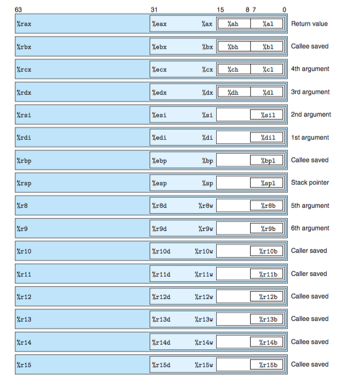

g Intel x86 Architecture 1
Evolution of ISAs
Some arbitrary points in the evolution of Instruction Set Architectures (ISAs):
Manchester Mark 1: 1948. Pioneered index registers.
IBM S/360: 1964. Same architecture across a wide range of implementations. Largely compatible with current IBM zSeries.
DEC PDP-8: 1965. 12-bit mini-computer.
Intel 4004: 1971. 4-bit Microprocessor. Led to 8-bit 8080.
Intel 8086: 1978. 16-bit microprocessor. 8-bit variant 8088 used in first IBM PC. 1 MB segmented address space.
Intel 80386: 1985. 32-bit microprocessor. Linear address space. Complex Instruction Set Computer (CISC).
IBM 801: 1975. Early Reduced Instruction Set Computer (RISC). Later RISCs included MIPS, IBM Power PC, Sun SPARC, Acorn Risc Machine (ARM) (currently widely used in mobile apps).
x86 Evolution
- 8086
1978. 29K transistors. 16-bit with 20-bit segmented address-space. Similar to earlier 8080. 8088 8-bit variant. 8087 floating-point unit.
- 80286
1984. 134K transistors. Added real mode and protected modes with segmented addressing.
- 80386
1985. 275K transistors. 32-bit. Supported flat 32-bit linear address space.
- 80486
1989. 1.2M transistors. Integrated FPU.
x86 Evolution Continued
- Pentium
1993. 3.1M transistors. Better performance.
- PentiumPro
1995. 5.5M transistors. P6 microarchitecture.
- Pentium II
1997. 7M transistors. Continuation of P6 microarchitecture.
- Pentium III
1999. 8.2M transistors. Introduced SSE instructions for manipulating integer/float vectors. Later versions had level-2 cache on chip.
- Pentium 4
2000. 42M transistors. Extended SSE to SSE2 which could replace x87 floating-point instructions. NetBurst microarchitecture.
x86 Evolution Continued
- Pentium 4E
2004. 125M transistors. Added hyperthreading and AMD's x86-64 64-bit extension.
- Core 2
2006. 291M transistors. Multi-core.
- Core i7 Nehalem
2008. 781M transistors. Multi-core + hyperthreading.
- Core i7 Sandy Bridge
2011. 1.17G transistors. AVX extension to SSE, allowing data packed into 256-bit vectors.
- Core i7 Haswell
2013. 1.4G transistors. AVX2 extension to AVX, more instructions and formats.
Continuing evolution.
Moore's Law
Transistor count doubles every 18 months.
Similar evolution in disk capacities, performance, etc.
Example Program
In mstore.c:
long mult2(long, long); void multStore(long x, long y, long *dest) { long t = mult2(x, y); *dest = t; }
Assemble using:
$ gcc -Og -S sum1.c #assembly output in mstore.s
Assembly Program
Edited output from mstore.s:
#parameters x, y and dest in rdi, rsi, rdx multStore: #global label .LFB0: #local label .cfi_startproc #pseudo-op pushq %rbx #save rbx on stack movq %rdx, %rbx #save rdx in rbx call mult2@PLT #mult2(x, y) movq %rax, (%rbx) #*dest = t popq %rbx #restore rbx from stack ret #return to caller .cfi_endproc
Assembly Program Discussion
Identifiers starting with a period . do not correspond to machine instructions; they are directives to the assembler, also known as pseudo-ops or pseudo-instructions.
On x86-64 Linux the calling convention is that arguments which fit in registers can be passed using registers %rdi, %rsi, %rdx, %rcx, %r8 and %r9. Result returned in %rax (if it fits).
Different calling conventions on Windows.
Machine Language Program
In mstore.dump produced using
$ gcc -Og -c mstore.c #compile into mstore.o object file $ objdump -d mstore.o #disassemble mstore.o
mstore.o: file format elf64-x86-64 Disassembly of section .text: 0000000000000000 <multStore>: 0: 53 push %rbx 1: 48 89 d3 mov %rdx,%rbx 4: e8 00 00 00 00 callq 9 <multStore+0x9> 9: 48 89 03 mov %rax,(%rbx) c: 5b pop %rbx d: c3 retq
Executable
Need a main() function as well as mult2(). In main.c:
#include <stdio.h> void multStore(long, long, long *); int main() { long d; multStore(2, 3, &d); printf("2 * 3 --> %ld\n", d); return 0; }
Executable Continued
long mult2(long a, long b) { long s = a * b; return s; }
Executable Continued
Evolution of x86 ISA Sizes
8086: 16-bit registers, 20-bit addresses. Original IBM-PC based on 8088/8086.
x86-32: 80386: 32-bit registers, 32-bit addresses.
x86-64: 64-bit registers, 64-bit addresses (currently, at most 52 address bits used externally).
Smaller registers for legacy ISAs still available in current ISA.
X86-64 General Purpose Registers (U. Washington).
References
Text: Chapter 3.
Intel Corporation, Intel 64 and IA-32 Architectures: Software Developer's Manual, Source for some of the figures.
Linus Torvalds, Why Conditional Moves Are a Bad Idea.
Xiao-Feng Li, A Brief History of Intel CPU Microarchitectures.